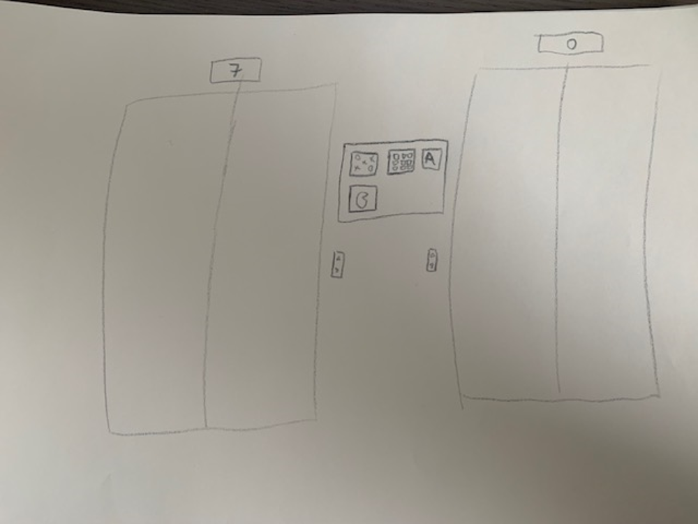
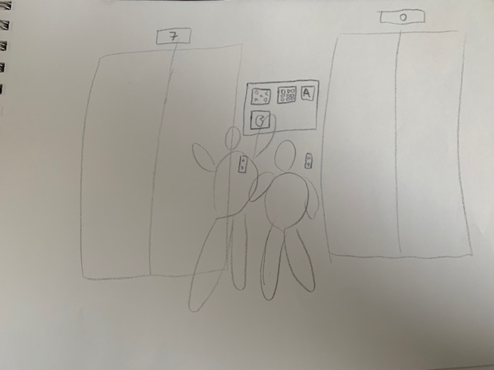

Playful Interaction
New Playful Interaction Concept
Het idee van mijn concept is een interactieve scherm bij de liften. Soms sta je redelijk lang te wachten bij de lift op school. Dit kan vervelend zijn als je haast hebt, maar om het wachten wat plezieriger te maken is er een interactieve scherm bij de lift, waarop verschillende minigames gespeeld kunnen worden, zoals memory, boter kaas en eieren en nog veel meer.
De spellen kunnen met meerdere personen gespeeld worden, dus als je met meer meerdere mensen voor de lift staat te wachten kan je een potje boter, kaas en eieren tegen elkaar spelen.
De installatie bestaat uit een touchscreen scherm, waarop mensen de spellen kunnen kiezen en spelen. Dit ziet er ongeveer zo uit:
Tussen de liften is een scherm te zien met een keuze uit verschillende games. Hieronder is een schets te zien waar er twee personen een game gaan spelen terwijl ze op de lift staan te wachten.
De input die het scherm gebruikt is alleen touchscreen, hiermee kunnen de gebruikers een spel selecteren en het spel spelen.
De output die de installatie geeft is geluid en een reactie op het beeld, zoals een tegel omdraaien bij memory
Deze installatie is een gestructureerde, maar ook een ongestructureerde vorm van interactie, omdat de spelers een keuze uit een spel hebben, maar daarna alle mogelijkheden van de interactie al vast staan. Verder is het een competitieve installatie, omdat je wilt winnen van je tegenstander. Deze automaat is een interdependent shared space, omdat de gebruikers dezelfde ruimte gebruiken.
Onderzoek
Pocky, the interactive photo booth.
https://www.market-trend.com.hk/showcaseDetail?id=195Pocky is een Japans snoepmerk. Om een nieuwe smaak te promoten is er een snoepautomaat gemaakt die afhankelijk van iemands glimlach de nieuwe smaak gratis laat proeven. Het doel hierbij is om op een leuke manier de nieuwe smaak van Pocky de wereld in te brengen. Op de automaat zit een touchscreen, hierop kan de gebruiker op een knop drukken en wordt er afgeteld op het scherm.
Nadat er afgeteld is wordt er een foto gemaakt en zal de glimlach van de persoon uitgedrukt worden in een score. Hoe groter de glimlach hoe hoger de score. Bij het behalen van een score van 100 of hoger komt de nieuwe smaak van Pocky uit de automaat, zodat de gebruiker deze kan proeven.
Ook kan de gebruiker een QR-code scannen waarmee ze een kopie van de foto krijgen en deze kunnen delen.
De input die bij deze automaat gebruikt wordt is een camera waar de foto mee gemaakt wordt en uiteindelijk de glimlach gemeten wordt. Ook wordt er gebruik gemaakt van een touchscreen, zodat het apparaat weet wanneer er een foto gemaakt moet worden als de gebruiker op het scherm drukt.
De output van deze automaat is de score van de glimlach die geprojecteerd wordt op het scherm en de foto die gemaakt. Verder wordt de automaat getriggerd bij een glimlach met een score van 100 of hoger.
Bij deze automaat wordt er gebruik gemaakt van een gestructureerde vorm van interactie. Het proces is heel duidelijk en heeft twee keuzes, de score wordt wel of niet gehaald. Deze installatie kan je maar met 1 persoon tegelijk gebruiken een heeft een vorm van competitie, omdat je de score van 100 of hoger wilt halen. Verder is deze installatie een interdependent shared space, omdat mensen dezelfde ruimte gebruiken, maar verschillende resultaten krijgen.
Reflectie
Ik vind dit onderwerp heel interessant om over geleerd te hebben. Dit komt vooral doordat dagelijkse activiteiten op een interessante manier leuker gemaakt worden. Ook kan het sommige problemen oplossen. Bijvoorbeeld het afvalprobleem. In de les was een voorbeeld van een interactieve prullenbak, waardoor mensen sneller geneigd zijn hun afval weg te gooien. Dit zorgt ervoor dat het probleem van zwerfafval op straat deels voorkomen wordt.
In de toekomst zullen nog veel van dit soort uitvindingen bedacht worden. Vooral het idee dat er op een leuke speelse manier een probleem opgelost kan worden spreekt mij heel erg aan. Soms is het idee heel simpel, maar haalt het heel veel mensen over om wat aan een probleem te doen.
Dit onderwerp heeft mij meer dan verbaasd. Ik dacht in eerste instantie aan games bij het horen van playful interaction en dat het bedoeld was om mensen te vermaken. Dat is deels ook zo, maar ik was mij er niet van bewust dat het ook daadwerkelijk problemen op kan lossen.
Al met al vond ik dit onderwerp zeer interessant om meer over te leren en heb ik er een hoop over geleerd.